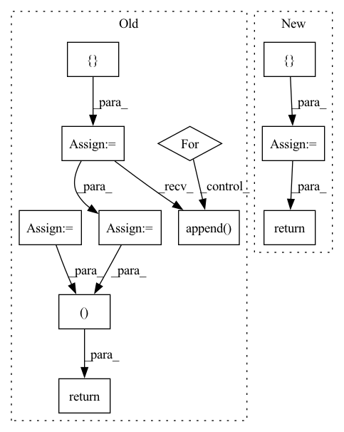

Pattern ID :24417
Before Change
List[Metadata],
Optional[List[TextDocument]],
]:
inputs = []
expanded_documents = []
for doc in documents:
partitions: Sequence[Span]
if self.single_sentence:
partitions = doc[self.sentence_annotation]
else:
partitions = [Span(start=0, end=len(doc.text))]
for partition in partitions:
encoding = self.tokenizer(
doc.text[partition.start : partition.end],
padding=False,
truncation=self.truncation,
max_length=self.max_length,
is_split_into_words=False,
return_offsets_mapping=True,
return_special_tokens_mask=True,
)
inputs.append( encoding)
expanded_documents.append(doc)
metadata = [
{
"offset_mapping": inp.pop("offset_mapping"),
"special_tokens_mask": inp.pop("special_tokens_mask"),
}
for inp in inputs
]
if self.single_sentence:
i = 0
for document in documents:
for sentence_index in range(len(document[self.sentence_annotation])):
metadata[i]["sentence_index"] = sentence_index
i += 1
return inputs, metadata, expanded_documents
def encode_target(
self,
documents: List[TextDocument],After Change
else:
partitions = [Span(start=0, end=len(document.text))]
task_encodings: List[TaskEncoding] = []
for partition_idx, partition in enumerate(partitions):
inputs = self.tokenizer(
document.text[partition.start : partition.end],
padding=False,
truncation=self.truncation,
max_length=self.max_length,
is_split_into_words=False,
return_offsets_mapping=True,
return_special_tokens_mask=True,
)
metadata = {
"offset_mapping": inputs.pop("offset_mapping"),
"special_tokens_mask": inputs.pop("special_tokens_mask"),
}
if self.single_sentence:
metadata["partition_idx"] = partition_idx
task_encodings.append(
TaskEncoding(
document=document,
inputs=inputs,
metadata=metadata,
)
)
return task_encodings
def encode_target(
self,In pattern: SUPERPATTERN
Frequency: 3
Non-data size: 11
Instances Fragment ID: 75853765
Project Name: christophalt/pytorch-ie
Commit Name: 71e9abcacab7dfca0b9ff2e2052008eaf3a52ed0
Time: 2022-04-29
Author: ChristophAlt@users.noreply.github.com
File Name: src/pytorch_ie/taskmodules/transformer_span_classification.py
M Class Name: TransformerSpanClassificationTaskModule
N Class Name: TransformerSpanClassificationTaskModule
M Method Name: encode_input(3)
N Method Name: encode_input(3)
M Parent Class: _TransformerSpanClassificationTaskModule
N Parent Class: _TransformerSpanClassificationTaskModule
M File Name: src/pytorch_ie/taskmodules/transformer_span_classification.py
N File Name: src/pytorch_ie/taskmodules/transformer_span_classification.py
M Start Line: 121
M End Line: 164
N Start Line: 121
N End Line: 163
Before Change
)
def forward(self, input, hidden_state=None):
output = []
for step in range(input.size(1)):
// Compute current time-step
hidden_state = self.rnn_cell(input[:, step, :, :, :], hidden_state)
output.append( hidden_state)
// Stack the list of output hidden states into a tensor
output = torch.stack(output, 0)
return output
// --------------------------------------------------------------------------After Change
seq_len = len(cur_layer_input)
layer_output_list = []
last_state_list = []
for l, (gru_cell, hid_dp) in enumerate(zip(self.cell_list, self.hidden_dps)):
h = hidden_state[l]
output_inner = []
for t in range(seq_len):
h = gru_cell(input=cur_layer_input[t], h_prev=h)
output_inner.append(h)
cur_layer_input = torch.stack(output_inner) // list to array
if l != self.n_layers:
cur_layer_input = hid_dp(cur_layer_input)
last_state_list.append(h)
layer_output = torch.stack(output_inner, dim=int(self.batch_first))
last_state_list = torch.stack(last_state_list, dim=0)
return layer_output, last_state_list
def reset_parameters(self):
for c in self.cell_list:
c.reset_parameters() Fragment ID: 75853764
Project Name: openclimatefix/skillful_nowcasting
Commit Name: 02c5ceadd01484d6ac8bce848ff76446fe7a6917
Time: 2021-10-18
Author: jacob@bieker.tech
File Name: nowcasting_gan/layers/ConvGRU.py
M Class Name: ConvGRU
N Class Name: ConvGRU
M Method Name: forward(3)
N Method Name: forward(3)
M Parent Class: nn.Module
N Parent Class: nn.Module
M File Name: nowcasting_gan/layers/ConvGRU.py
N File Name: nowcasting_gan/layers/ConvGRU.py
M Start Line: 269
M End Line: 276
N Start Line: 196
N End Line: 221
Before Change
// Update gate of the GRU.
update_gate_conv = layers.SNConv2D(num_channels, self._kernel_size, sn_eps=self._sn_eps)
update_gate = F.sigmoid(update_gate_conv(xh))
// Gate the inputs.
gated_input = torch.cat([ x, read_gate * prev_state = F.relu(output_conv(gated_input))
out = update_gate * prev_state + (1.0 - update_gate) * c
new_state = out
return out, new_state
After Change
self.cell = ConvGRUCell(input_channels, output_channels, kernel_size, sn_eps)
def forward(self, x: torch.Tensor, hidden_state=None) -> torch.Tensor:
outputs = []
for step in range(x.size(1)):
// Compute current timestep
output, hidden_state = self.cell(x[:, step, :, :, :], hidden_state)
outputs.append( output)
// Stack outputs to return as tensor
outputs = torch.stack(outputs, dim=0)
return outputs
Fragment ID: 75853767
Project Name: openclimatefix/skillful_nowcasting
Commit Name: b080785f5f559396d0b7e1a52d1c6d9a948d9439
Time: 2021-11-08
Author: jacob@bieker.tech
File Name: nowcasting_gan/layers/ConvGRU.py
M Class Name: ConvGRU
N Class Name: ConvGRU
M Method Name: forward(3)
N Method Name: forward(3)
M Parent Class: torch.nn.Module
N Parent Class: torch.nn.Module
M File Name: nowcasting_gan/layers/ConvGRU.py
N File Name: nowcasting_gan/layers/ConvGRU.py
M Start Line: 19
M End Line: 51
N Start Line: 70
N End Line: 78
Before Change
List[Metadata],
Optional[List[TextDocument]],
]:
inputs = []
expanded_documents = []
for doc in documents:
partitions: Sequence[Span]
if self.single_sentence:
partitions = doc[self.sentence_annotation]
else:
partitions = [Span(start=0, end=len(doc.text))]
for partition in partitions:
encoding = self.tokenizer(
doc.text[partition.start : partition.end],
padding=False,
truncation=self.truncation,
max_length=self.max_length,
is_split_into_words=False,
return_offsets_mapping=True,
return_special_tokens_mask=True,
)
inputs.append( encoding)
expanded_documents.append(doc)
metadata = [
{
"offset_mapping": inp.pop("offset_mapping"),
"special_tokens_mask": inp.pop("special_tokens_mask"),
}
for inp in inputs
]
if self.single_sentence:
i = 0
for document in documents:
for sentence_index in range(len(document[self.sentence_annotation])):
metadata[i]["sentence_index"] = sentence_index
i += 1
return inputs, metadata, expanded_documents
def encode_target(
self,
documents: List[TextDocument],After Change
else:
partitions = [Span(start=0, end=len(document.text))]
task_encodings: List[TaskEncoding] = []
for partition_idx, partition in enumerate(partitions):
inputs = self.tokenizer(
document.text[partition.start : partition.end],
padding=False,
truncation=self.truncation,
max_length=self.max_length,
is_split_into_words=False,
return_offsets_mapping=True,
return_special_tokens_mask=True,
)
metadata = {
"offset_mapping": inputs.pop("offset_mapping"),
"special_tokens_mask": inputs.pop("special_tokens_mask"),
}
if self.single_sentence:
metadata["partition_idx"] = partition_idx
task_encodings.append(
TaskEncoding(
document=document,
inputs=inputs,
metadata=metadata,
)
)
return task_encodings
def encode_target(
self, Fragment ID: 75853775
Project Name: christophalt/pytorch-ie
Commit Name: 71e9abcacab7dfca0b9ff2e2052008eaf3a52ed0
Time: 2022-04-29
Author: ChristophAlt@users.noreply.github.com
File Name: src/pytorch_ie/taskmodules/transformer_span_classification.py
M Class Name: TransformerSpanClassificationTaskModule
N Class Name: TransformerSpanClassificationTaskModule
M Method Name: encode_input(3)
N Method Name: encode_input(3)
M Parent Class: _TransformerSpanClassificationTaskModule
N Parent Class: _TransformerSpanClassificationTaskModule
M File Name: src/pytorch_ie/taskmodules/transformer_span_classification.py
N File Name: src/pytorch_ie/taskmodules/transformer_span_classification.py
M Start Line: 121
M End Line: 164
N Start Line: 121
N End Line: 163